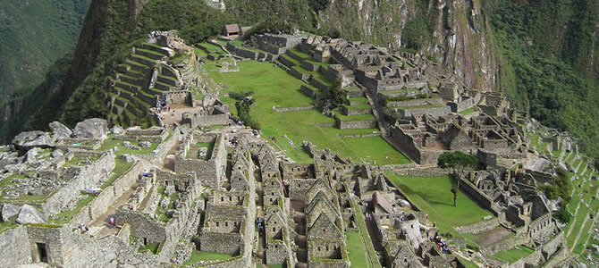

MACHUPICCHU

Cusco Region, Peru
Machu Picchu is located on a remote secondary road in nearly impassable terrain high above the Urubamba River,
Machu Picchu sits nearly 2438 meters (8000 feet) above sea level, on top of a ridge between two peaks of different size.
The name "Machu Picchu" comes simply from its geography. It literally means "old peak", just as "Huaynapicchu" is "young peak".
The more accurate translation relates, however, to the concept of size, with Machu Picchu as the "bigger peak" and Huaynapicchu,
the "smaller peak".Machu Picchu, the most famous citadel of the Incas, is accessible by train from Cusco or traveling along
\the Camino Inca. The city was never discovered by the conquerors Spanish and remained lost for centuries.
Machu Picchu is an architectural jewel, which combine perfectly the architectural style with the beautiful natural environment
that surrounded it. The Beauty and the Mystery of its walled ruins that once was the palace the thinnest Inca of stone
surrounded by the virginal landscapes, the flora and green jungle bathes its abrupt topography.